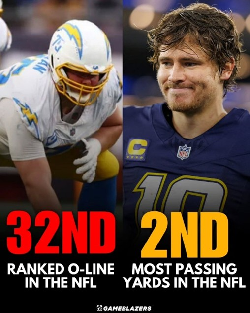
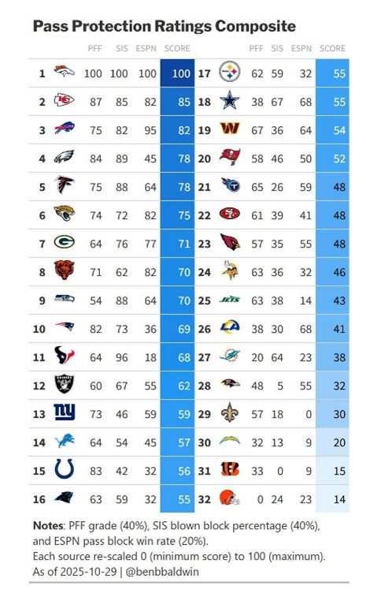

Understand the Context
What truly elevates Herbert's candidacy is the severely disadvantaged context in which he is operating. The Chargers have been forced to start backup and reserve tackles following season-ending injuries to stars like Rashawn Slater and Joe Alt, transforming the offensive line into the most bruised and battered unit in the NFL. Furthermore, the team has had to adjust its offensive scheme under a new coordinator, yet Herbert has continued to deliver, posting career-low times to throw and utilizing quick passes and scrambles to neutralize ferocious pass-rushes. His ability to elevate a hampered offense and single-handedly keep the Chargers competitive in the AFC makes him the player who provides the most value to his team's success in the entire league.

Justin Herbert is consistently playing behind an offensive line that is arguably the worst in the entire NFL right now, evidenced by the fact that the Chargers have allowed the second-most pressures in the league. This disastrous protection forces Herbert to operate in chaos, demanding immediate decisions and pinpoint accuracy while constantly facing contact—a job that is exponentially more difficult than for his MVP competitors.
While Justin Herbert navigates one of the league's most injured and poorly graded offensive lines, his primary MVP rivals like Matthew Stafford and Drake Maye benefit from vastly superior protection. These top contenders are operating behind units that rank among the NFL's best in pass-blocking efficiency, affording them the clean pockets and extra time needed to comfortably execute long-developing plays.
